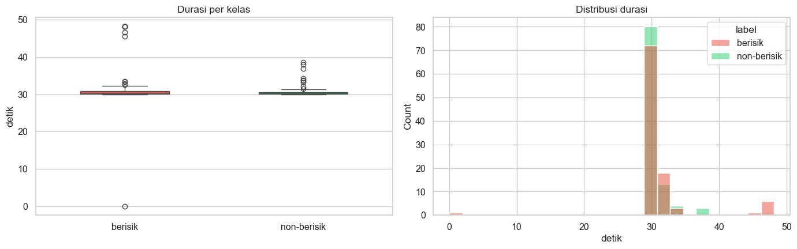
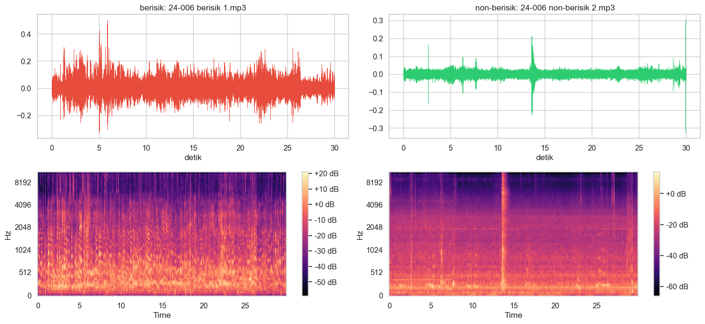
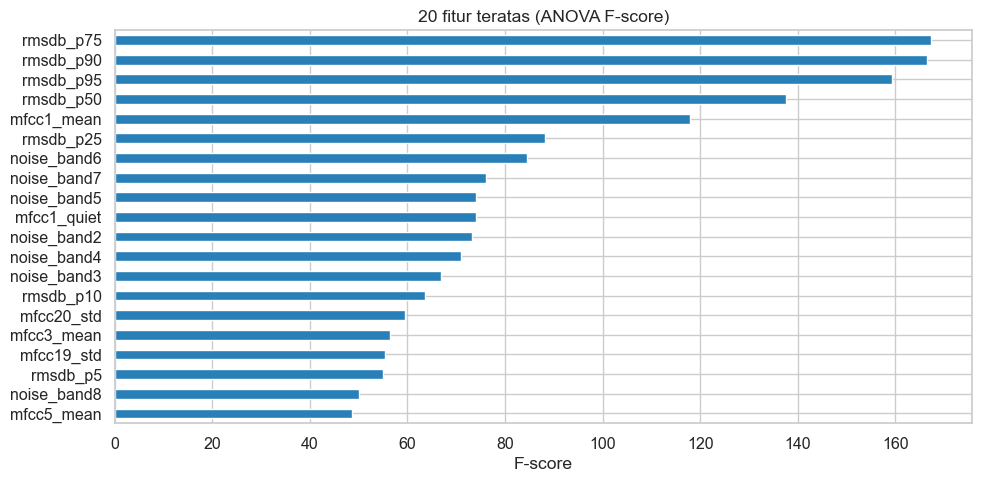
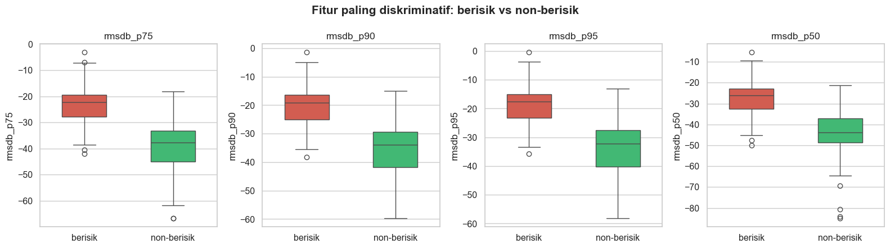
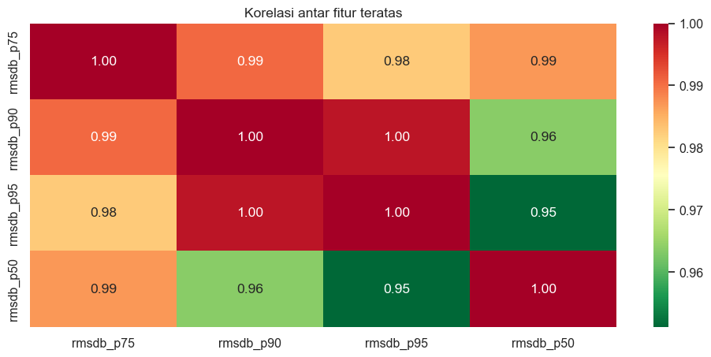
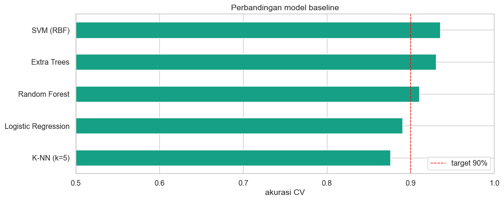
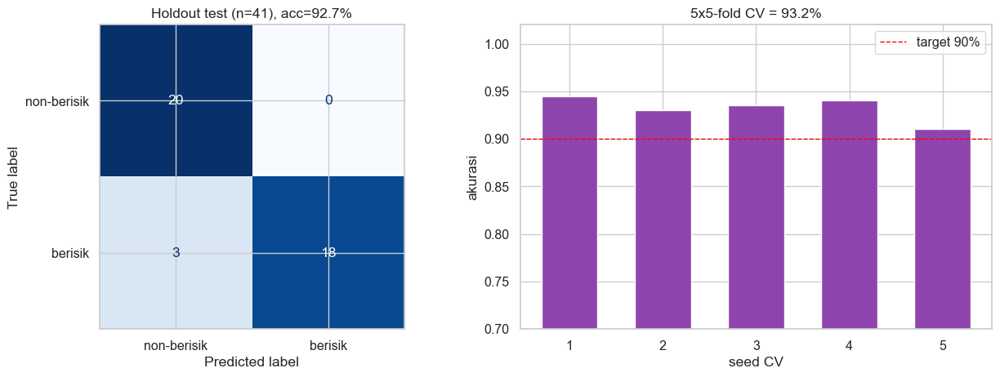
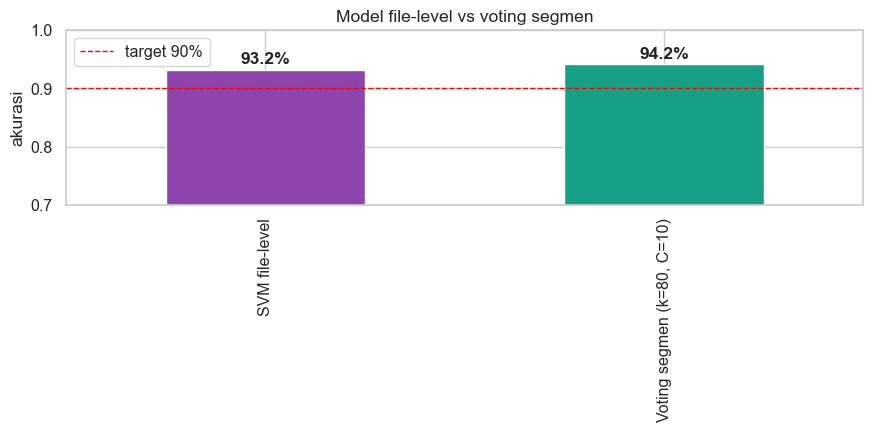
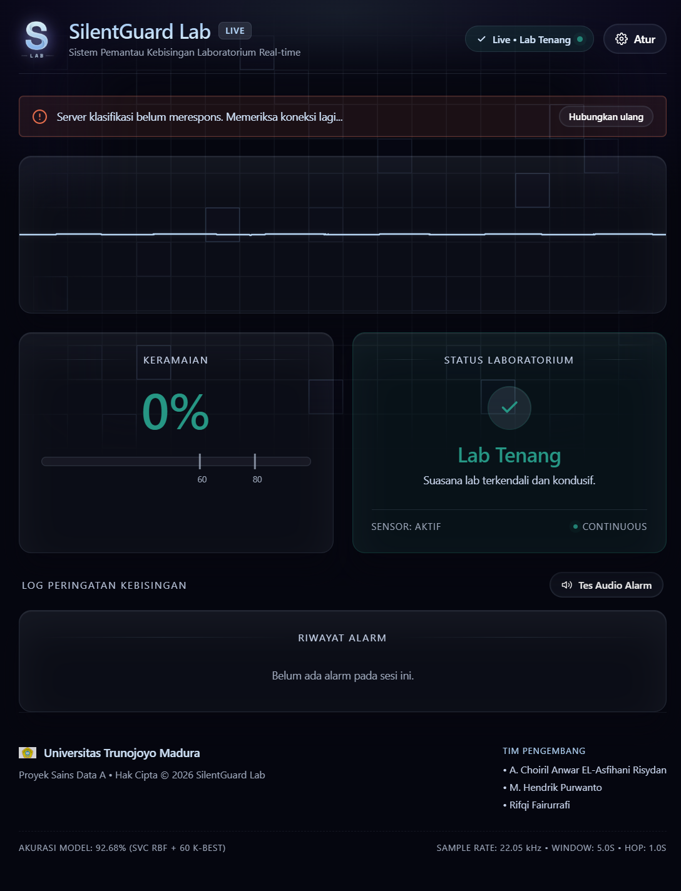

Klasifikasi Audio Berisik vs Non-Berisik#
Tujuan: membangun model klasifikasi biner untuk membedakan rekaman berisik (ada gangguan suara latar) dan non-berisik (relatif sunyi), dengan target akurasi > 90% pada data uji.
Dataset: psd-audio/berisik (101 file) dan psd-audio/non-berisik (100 file), format MP3, durasi ±30 detik per file.
Pipeline:
Audit kualitas data (duplikat file & label bertentangan)
Ekstraksi fitur audio (MFCC, spektral, noise-floor, RMS)
Pemodelan & tuning (SVM RBF sebagai model utama)
Evaluasi (holdout test, stratified 5-fold CV berulang, confusion matrix)
Simpan model & fungsi inferensi
Business Understanding#
Latar Belakang#
Rekaman audio dapat mengandung gangguan suara latar yang menurunkan kualitas informasi dan mengganggu proses analisis maupun komunikasi. Karena itu, diperlukan sistem yang dapat mengidentifikasi apakah sebuah rekaman termasuk berisik atau non-berisik secara otomatis.
Tujuan Bisnis#
Membantu pengguna melakukan pemeriksaan kualitas rekaman audio secara cepat dan konsisten.
Mengurangi ketergantungan pada pemeriksaan manual yang subjektif dan memerlukan waktu.
Menyediakan dasar untuk proses lanjutan, seperti penyaringan audio, peningkatan kualitas suara, atau pengambilan keputusan berbasis kualitas rekaman.
Tujuan Analitik#
Membangun model klasifikasi biner dengan memanfaatkan karakteristik audio, seperti MFCC, fitur spektral, noise floor, dan RMS, untuk memprediksi label berisik dan non-berisik. Model ditargetkan mencapai akurasi di atas 90% pada data uji, dengan evaluasi tambahan menggunakan cross-validation dan confusion matrix.
Pemangku Kepentingan dan Pengguna#
Solusi ini dapat digunakan oleh pengembang aplikasi audio, analis data, peneliti pengolahan suara, maupun pengguna umum yang ingin memeriksa kualitas rekaman sebelum digunakan lebih lanjut.
Kriteria Keberhasilan#
Keberhasilan solusi diukur dari performa klasifikasi yang baik, kestabilan hasil evaluasi, serta tersedianya aplikasi yang dapat digunakan untuk melakukan prediksi pada file audio baru.
Hasil Deployment#
Model telah di-deploy dalam bentuk aplikasi web yang dapat digunakan untuk menguji klasifikasi audio secara langsung:
Aplikasi: silent-lab.vercel.app
Aplikasi deployment tersebut menjadi antarmuka penggunaan model, sedangkan notebook ini mendokumentasikan proses pemahaman masalah, persiapan data, ekstraksi fitur, pelatihan, dan evaluasi model.
Data Understanding#
Dataset proyek ini berisi rekaman audio berformat MP3 yang dikelompokkan ke dalam dua kelas:
Label |
Makna |
Jumlah awal |
|---|---|---|
|
Rekaman dengan gangguan suara latar atau noise floor yang relatif tinggi |
101 file |
|
Rekaman yang relatif sunyi dengan gangguan latar lebih rendah |
100 file |
Setiap file dibaca sebagai sinyal digital menggunakan librosa. Informasi yang diperiksa meliputi nama file, label kelas, durasi, sampling rate, jumlah sampel, dan checksum MD5. Pemeriksaan ini penting untuk memastikan file dapat dibaca serta mengetahui apakah terdapat file duplikat atau durasi yang tidak seragam.
Target prediksi adalah label biner berisik dan non-berisik. Karena durasi rekaman dapat berbeda, model tidak langsung menggunakan seluruh sampel audio sebagai input. Audio terlebih dahulu dibagi menjadi frame, kemudian setiap frame diringkas menjadi fitur statistik sehingga setiap file direpresentasikan oleh satu baris data fitur.
Unit analisis: satu file audio.
Target: label.
Prediktor: fitur energi, spektral, MFCC, noise-floor, dan spectral contrast.
Setup#
Dependensi yang Dibutuhkan#
Notebook ini membutuhkan beberapa library Python untuk membaca audio, mengekstraksi fitur, membuat visualisasi, dan melatih model machine learning.
Paket |
Kegunaan |
|---|---|
|
Membaca audio dan mengekstraksi fitur audio |
|
Backend pembacaan file audio |
|
Operasi numerik |
|
Operasi ilmiah dan dependensi pemrosesan audio/model |
|
Pengolahan tabel data |
|
Visualisasi |
|
Fitur seleksi, cross-validation, tuning, dan model klasifikasi |
|
Menyimpan dan memuat model |
Cell berikut menggunakan %pip agar paket dipasang pada environment/kernel Python yang sedang digunakan notebook. Setelah instalasi selesai, bila kernel meminta restart, pilih Restart Kernel lalu jalankan notebook kembali dari awal.
Catatan MP3: kode memiliki fallback ke perintah
ffmpeguntuk file yang tidak dapat dibaca langsung olehsoundfile. Karena FFmpeg adalah aplikasi sistem, bukan paket Python, instal juga FFmpeg dan pastikan perintahffmpegtersedia di PATH Windows. Paket%pip install ffmpeg-pythonsaja tidak memasang executable FFmpeg.
Reproducibility#
Agar hasil notebook dapat diulang, gunakan langkah berikut:
Pilih Python environment/kernel yang sama untuk seluruh cell.
Jalankan cell instalasi pada bagian Setup, kemudian restart kernel jika diminta.
Jalankan semua cell secara berurutan dari atas sampai bawah, bukan hanya cell modeling.
Pastikan folder dataset berada pada path yang dikenali oleh
BASE_DIR.Pertahankan
RANDOM_STATE = 42untuk split data dan konfigurasi acak utama.Catat versi library yang digunakan, terutama
librosa,numpy,scipy,pandas, danscikit-learn.Simpan output fitur dan model setelah eksekusi selesai.
Untuk memeriksa versi library pada environment aktif:
import sklearn
import scipy
print('librosa:', librosa.__version__)
print('numpy:', np.__version__)
print('scipy:', scipy.__version__)
print('pandas:', pd.__version__)
print('scikit-learn:', sklearn.__version__)
Hasil angka pada catatan harus diambil dari eksekusi terakhir setelah seluruh notebook dijalankan ulang, karena perubahan dataset, environment, atau konfigurasi dapat mengubah jumlah data dan skor evaluasi.
%pip install -q \
librosa \
soundfile \
numpy \
scipy \
pandas \
matplotlib \
seaborn \
scikit-learn \
joblib
Note: you may need to restart the kernel to use updated packages.
import warnings
warnings.filterwarnings('ignore')
import hashlib
import subprocess
from pathlib import Path
import joblib
import librosa
import matplotlib.pyplot as plt
import numpy as np
import pandas as pd
import seaborn as sns
from sklearn.ensemble import ExtraTreesClassifier, RandomForestClassifier
from sklearn.feature_selection import SelectKBest, f_classif
from sklearn.linear_model import LogisticRegression
from sklearn.metrics import (ConfusionMatrixDisplay, accuracy_score,
classification_report, confusion_matrix)
from sklearn.model_selection import (GridSearchCV, RepeatedStratifiedKFold,
StratifiedGroupKFold, StratifiedKFold,
cross_val_score, train_test_split)
from sklearn.neighbors import KNeighborsClassifier
from sklearn.pipeline import Pipeline, make_pipeline
from sklearn.preprocessing import StandardScaler
from sklearn.svm import SVC
sns.set_theme(style='whitegrid', font_scale=1.05)
plt.rcParams['figure.figsize'] = (12, 5)
RANDOM_STATE = 42
BASE_DIR = Path('../psd-audio') if Path('../psd-audio').exists() else (Path('..') if (Path('..') / 'berisik').exists() else Path('.'))
KELAS = ['berisik', 'non-berisik']
PALETTE = {'berisik': '#e74c3c', 'non-berisik': '#2ecc71'}
SR = 22050
print('librosa', librosa.__version__)
librosa 0.11.0
Inventaris Data & EDA#
Cek jumlah file, durasi, dan distribusi kelas. Durasi penting: file berisik ada yang jauh lebih panjang (±12 menit) dibanding non-berisik yang seragam ±30 detik.
Eksplorasi Data#
Eksplorasi data dilakukan sebelum pemodelan untuk memahami kualitas data dan melihat apakah karakteristik sinyal berbeda antar kelas. Analisis yang dilakukan meliputi:
menghitung jumlah file pada setiap label untuk memeriksa keseimbangan kelas;
memeriksa durasi minimum, maksimum, rata-rata, dan sebaran durasi audio;
mencoba membaca setiap file dan mencatat file yang gagal dibaca;
memeriksa duplikasi berdasarkan checksum MD5;
membandingkan waveform dan mel-spectrogram antara contoh audio berisik dan non-berisik;
membandingkan distribusi fitur menggunakan boxplot serta korelasi fitur teratas.
Dari eksplorasi sinyal, audio berisik diharapkan memiliki energi latar yang tetap terlihat pada bagian yang paling sunyi. Karena itu, selain statistik seluruh frame, notebook juga menghitung statistik pada 20% frame dengan RMS terendah. Visualisasi waveform dan mel-spectrogram pada cell berikut digunakan untuk memeriksa pola tersebut secara langsung.
audio_files = []
for kelas in KELAS:
for fp in sorted((BASE_DIR / kelas).glob('*.mp3')):
audio_files.append({'path': fp, 'label': kelas, 'file': fp.name, 'size_kb': fp.stat().st_size / 1024})
df_files = pd.DataFrame(audio_files)
print(f'Total file: {len(df_files)}')
print(df_files.label.value_counts().to_string())
df_files.head()
Total file: 201
label
berisik 101
non-berisik 100
| path | label | file | size_kb | |
|---|---|---|---|---|
| 0 | berisik\24-003 berisik (1).mp3 | berisik | 24-003 berisik (1).mp3 | 705.347656 |
| 1 | berisik\24-003 berisik (2).mp3 | berisik | 24-003 berisik (2).mp3 | 1201.875000 |
| 2 | berisik\24-003 berisik (3).mp3 | berisik | 24-003 berisik (3).mp3 | 1175.625000 |
| 3 | berisik\24-006 berisik 1.mp3 | berisik | 24-006 berisik 1.mp3 | 720.654297 |
| 4 | berisik\24-006 berisik 2.mp3 | berisik | 24-006 berisik 2.mp3 | 712.082031 |
def load_audio(path, sr=SR):
"""Load audio mono; fallback ke ffmpeg bila container tidak terbaca soundfile."""
try:
y, _ = librosa.load(str(path), sr=sr, mono=True)
return y
except Exception:
out = subprocess.run(
['ffmpeg', '-v', 'error', '-i', str(path), '-f', 'f32le', '-ac', '1', '-ar', str(sr), '-'],
capture_output=True, check=True).stdout
return np.frombuffer(out, dtype=np.float32).copy()
durasi, gagal = {}, []
for row in df_files.itertuples():
try:
durasi[row.file] = len(load_audio(row.path)) / SR
except Exception:
gagal.append(row.file)
df_files['duration_s'] = df_files.file.map(durasi)
print(f'Gagal dibaca: {len(gagal)} -> {gagal}')
print(df_files.groupby('label').duration_s.describe().round(1).to_string())
Gagal dibaca: 0 -> []
count mean std min 25% 50% 75% max
label
berisik 101.0 31.4 5.4 0.1 30.0 30.2 30.9 48.1
non-berisik 100.0 30.7 1.5 29.9 30.0 30.2 30.5 38.5
fig, axes = plt.subplots(1, 2, figsize=(14, 4.5))
sns.boxplot(data=df_files, x='label', y='duration_s', palette=PALETTE, width=0.5, ax=axes[0])
axes[0].set_title('Durasi per kelas'); axes[0].set_xlabel(''); axes[0].set_ylabel('detik')
sns.histplot(data=df_files, x='duration_s', hue='label', palette=PALETTE, bins=25, ax=axes[1])
axes[1].set_title('Distribusi durasi'); axes[1].set_xlabel('detik')
plt.tight_layout(); plt.show()

Visualisasi sinyal: mengapa berisik bisa dibedakan#
Dua plot di bawah memperlihatkan waveform dan mel-spectrogram. Rekaman berisik punya noise floor yang lebih tinggi dan merata di semua frekuensi, sementara non-berisik punya ruang sunyi yang lebih dalam.
fig, axes = plt.subplots(2, 2, figsize=(15, 7))
for col, kelas in enumerate(KELAS):
sample = df_files.query('label == @kelas').iloc[3]
y = load_audio(sample.path)[:30 * SR]
t = np.arange(len(y)) / SR
axes[0, col].plot(t, y, lw=0.4, color=PALETTE[kelas])
axes[0, col].set_title(f'{kelas}: {sample.file}'); axes[0, col].set_xlabel('detik')
mel = librosa.power_to_db(librosa.feature.melspectrogram(y=y, sr=SR, n_mels=96))
img = librosa.display.specshow(mel, sr=SR, x_axis='time', y_axis='mel', ax=axes[1, col], cmap='magma')
fig.colorbar(img, ax=axes[1, col], format='%+2.0f dB')
plt.tight_layout(); plt.show()

Data Sampel (Tanpa Cleaning)#
Sesuai instruksi, tahap pembersihan/pembuangan data dihapus agar seluruh sampel (genap 201 file: 101 berisik, 100 non-berisik) tetap digunakan secara utuh tanpa ada sampel yang dibuang.
df_files['md5'] = df_files.path.map(lambda p: hashlib.md5(p.read_bytes()).hexdigest())
dup_md5 = df_files.groupby('md5').file.apply(list)
dup_md5 = dup_md5[dup_md5.str.len() > 1]
print(f'Kelompok duplikat byte-identik: {len(dup_md5)}')
for files in dup_md5:
labels = df_files.set_index('file').loc[files, 'label'].unique()
flag = ' <-- KONFLIK LABEL' if len(labels) > 1 else ''
print(' ', ' == '.join(files), flag)
Kelompok duplikat byte-identik: 15
24-031 non-berisik 3.mp3 == 24-071 non berisik 1.mp3
24-157 Berisik 1.mp3 == 24-157 Berisik 2.mp3 == 24-157 Berisik 3.mp3
24-071 berisik 2.mp3 == 24-098 berisik 2.mp3
24-123 berisik 1.mp3 == 24-201 berisik 2.mp3
24-003 berisik (2).mp3 == 24-079 berisik 2.mp3
24-078_NonBerisik 2.mp3 == 24-078_NonBerisik 3.mp3
24-003 sunyi 3.mp3 == 24-079 non-berisik 1.mp3
24-003 berisik (3).mp3 == 24-079 berisik 1.mp3 == 24-123 berisik 3.mp3
24-031 non-berisik 2.mp3 == 24-071 non berisik 2.mp3 == 24-115_sampel non berisik 2.mp3
24-196 non berisik 1.mp3 == 24-196 non berisik 2.mp3 == 24-196 non berisik 3.mp3
24-031 non-berisik 1.mp3 == 24-071 non berisik 3.mp3
24-071 berisik 3.mp3 == 24-098 berisik 3.mp3
24-115 sampel berisik 3.mp3 == 24-190 berisik 3.mp3
24-003 sunyi 2.mp3 == 24-053 non-berisik 1.mp3
24-003 berisik (1).mp3 == 24-053 berisik 3.mp3
# Deteksi konflik label juga pada file yang tidak byte-identik tapi hampir sama
probe = []
for row in df_files.itertuples():
try:
y = load_audio(row.path)[:30 * SR]
except Exception:
continue
mel = librosa.power_to_db(librosa.feature.melspectrogram(y=y, sr=SR, n_mels=32))
probe.append({'file': row.file, 'label': row.label, 'hash': row.md5, **{f'm{i}': v for i, v in enumerate(mel.mean(1))}})
probe = pd.DataFrame(probe)
pcol = [c for c in probe.columns if c.startswith('m')]
Z = StandardScaler().fit_transform(probe[pcol])
D = np.linalg.norm(Z[:, None] - Z[None], axis=2)
np.fill_diagonal(D, np.inf)
is_b = (probe.label == 'berisik').values
near = D[is_b][:, ~is_b]
pairs = [(probe.file[is_b].iloc[i], probe.file[~is_b].iloc[j], near[i, j])
for i, j in np.argwhere(near < 0.6)]
print('Pasangan hampir-identik lintas label (jarak < 0.6):')
for a, b, d in sorted(pairs, key=lambda x: x[2]):
print(f' {a:35s} <-> {b:35s} d={d:.3f}')
Pasangan hampir-identik lintas label (jarak < 0.6):
24-168_Berisik1.mp3 <-> 24-168_Non-Berisik2.mp3 d=0.580
# Pembersihan data dilewati/dihapus agar seluruh 201 sampel tetap digunakan tanpa ada yang dibuang
df_clean = df_files.copy().sort_values('file').reset_index(drop=True)
print(f'Total file yang digunakan: {len(df_clean)} file (tidak ada yang dibuang)')
print(df_clean.label.value_counts().to_string())
Total file yang digunakan: 201 file (tidak ada yang dibuang)
label
berisik 101
non-berisik 100
Ekstraksi Fitur#
Fitur dirancang untuk menangkap energi pada bagian sunyi (noise floor), karena di situlah perbedaan utama kedua kelas:
Kelompok |
Fitur |
|---|---|
Energi |
RMS dalam dB: persentil 5/10/25/50/75/90/95, dynamic range, SNR estimasi |
Noise floor |
statistik spektral + MFCC pada 20% frame berenergi terendah |
Spektral |
flatness, centroid, bandwidth, rolloff, zero-crossing rate, spectral contrast |
Timbre |
MFCC 1–20 (mean/std/quiet-frame), 8 band noise-floor mel |
Daftar Fitur yang Digunakan#
Setiap file audio diubah menjadi fitur-fitur berikut:
Kelompok |
Fitur |
Ringkasan yang disimpan |
Jumlah fitur |
|---|---|---|---|
Energi |
RMS dalam dB |
Persentil P5, P10, P25, P50, P75, P90, P95; standar deviasi |
8 |
Energi |
Dynamic range dan estimasi SNR |
Selisih P95-P5 dan P95-P10 |
2 |
Spektral |
Flatness, centroid, ZCR, bandwidth, rolloff |
Mean, standar deviasi, dan mean quiet-frame untuk masing-masing |
15 |
Timbre |
MFCC 1 sampai 20 |
Mean, standar deviasi, dan mean quiet-frame setiap koefisien |
60 |
Noise-floor |
8 band Mel |
Rata-rata energi pada quiet-frame untuk setiap band |
8 |
Spektral |
Spectral contrast |
Rata-rata setiap sub-band |
7 |
Total |
100 fitur |
Jumlah di atas adalah jumlah yang diharapkan dari konfigurasi ekstraksi saat ini. Jadi, jumlah fitur yang digunakan adalah 100 fitur. Cell Python tepat setelah proses ekstraksi fitur (feature-summary-code), sebelum bagian Analisis Fitur, menampilkan jumlah tersebut secara otomatis dari FEATURES, seluruh nama fitur, dan pengelompokan fitur agar perubahan konfigurasi dapat terdeteksi.
Rumus dan Perhitungan Manual Ekstraksi Fitur#
Fitur audio digunakan untuk mengubah sinyal suara menjadi angka yang dapat dipelajari oleh model. Pada proyek ini, fitur dipilih untuk menangkap energi, distribusi frekuensi, karakteristik noise, dan tekstur suara. Contoh berikut menggunakan angka kecil agar setiap langkah perhitungan dapat diikuti. Angka contoh tidak menggantikan perhitungan pada dataset; implementasi sebenarnya menghitung fitur pada seluruh frame audio menggunakan librosa.
Pembagian Sinyal Menjadi Frame#
Audio dibagi menjadi beberapa frame pendek agar karakteristik suara dapat dianalisis dari waktu ke waktu. Misalkan satu frame memiliki 8 sampel:
Dengan \(N=8\), setiap fitur dihitung dari nilai-nilai pada frame tersebut. Setelah semua frame selesai dihitung, notebook menyimpan nilai rata-rata, standar deviasi, dan nilai pada quiet-frame jika fitur tersebut berbasis frame.
RMS (Root Mean Square)#
RMS mengukur energi atau amplitudo rata-rata audio. Rekaman berisik cenderung memiliki RMS yang lebih tinggi, terutama pada bagian yang seharusnya sunyi.
Untuk 8 sampel di atas:
RMS dalam Desibel (dB)#
Nilai RMS diubah ke skala desibel agar rentang energi lebih mudah dibandingkan. Dengan referensi amplitudo \(A_{\mathrm{ref}}=1\):
Substitusi nilai RMS hasil contoh:
Pada kode, ditambahkan bilangan kecil \(\varepsilon=10^{-10}\) sebelum logaritma untuk mencegah \(\log_{10}(0)\) ketika sebuah frame benar-benar hening.
Persentil RMS-dB#
Persentil menunjukkan posisi suatu nilai dalam distribusi energi seluruh frame. Notebook menghitung persentil ke-5, 10, 25, 50, 75, 90, dan 95.
Misalkan RMS-dB dari 10 frame yang sudah diurutkan adalah:
Untuk ilustrasi metode nearest-rank, persentil ke-20 berada di sekitar sampel ke-2, yaitu \(P_{20}\approx-35\;\mathrm{dB}\), sedangkan persentil ke-80 berada di sekitar sampel ke-8, yaitu \(P_{80}\approx-12\;\mathrm{dB}\). Pada implementasi, numpy.percentile menggunakan interpolasi sesuai metode defaultnya, sehingga hasil dapat berupa angka desimal.
Dynamic Range#
Dynamic range menunjukkan jarak antara energi tinggi dan energi rendah pada audio. Nilai ini membantu membedakan audio yang memiliki perubahan energi besar dari audio yang energinya relatif rata.
Jika \(P_{95}=-5\;\mathrm{dB}\) dan \(P_{5}=-40\;\mathrm{dB}\):
Estimasi SNR#
SNR (Signal-to-Noise Ratio) secara umum membandingkan kekuatan sinyal dengan noise. Pada notebook digunakan estimasi sederhana berbasis persentil energi: energi tinggi diwakili \(P_{95}\) dan energi rendah diwakili \(P_{10}\).
Dengan \(P_{95}=-5\;\mathrm{dB}\) dan \(P_{10}=-35\;\mathrm{dB}\):
Nilai ini merupakan indikator relatif untuk klasifikasi, bukan pengukuran SNR laboratorium dengan sinyal bersih yang diketahui.
Quiet-frame dan Noise Floor#
Quiet-frame adalah 20% frame dengan RMS-dB terendah. Jika terdapat 10 frame, jumlah quiet-frame adalah:
Dari daftar energi di atas, dua frame paling sunyi adalah \(-40\) dan \(-35\;\mathrm{dB}\). Rata-rata energi quiet-frame adalah:
Bagian ini digunakan sebagai pendekatan noise floor: apabila audio berisik, energi latar pada frame tersunyi tetap relatif tinggi.
ZCR (Zero-Crossing Rate)#
ZCR menghitung seberapa sering sinyal berpindah tanda dari positif ke negatif atau sebaliknya. Noise dan komponen frekuensi tinggi biasanya menghasilkan ZCR yang lebih tinggi.
Untuk contoh, tanda sampel dapat ditulis sebagai:
Jika nilai nol dianggap tidak menambah perpindahan tanda, terdapat 6 perpindahan dari 7 pasangan sampel. Dengan bentuk hitung sederhana:
Implementasi librosa.feature.zero_crossing_rate menghitungnya secara konsisten pada setiap frame. Notebook kemudian menyimpan mean, standar deviasi, dan mean ZCR pada quiet-frame.
Spektral Centroid#
Spectral centroid menunjukkan pusat massa distribusi frekuensi dan sering dipersepsikan sebagai tingkat ?kecerahan? suara. Centroid tinggi berarti lebih banyak energi berada pada frekuensi tinggi.
Misalkan terdapat 4 bin frekuensi:
dan daya tiap bin:
Rumus centroid:
Perhitungannya:
Spectral Bandwidth#
Bandwidth mengukur penyebaran energi frekuensi di sekitar centroid. Jika energi tersebar luas, bandwidth lebih besar.
Dengan \(C=216{,}67\;\mathrm{Hz}\):
Spectral Rolloff#
Rolloff adalah frekuensi ketika akumulasi daya mencapai proporsi tertentu, umumnya 85%. Total daya pada contoh adalah:
Ambang 85%:
Akumulasi daya dari frekuensi rendah adalah \([1,5,6,6]\). Nilai pertama yang melewati 5,1 berada pada bin 300 Hz, sehingga:
Spectral Flatness#
Flatness membandingkan rata-rata geometrik dengan rata-rata aritmetika daya. Nilai mendekati 1 menunjukkan spektrum lebih merata seperti noise, sedangkan nilai kecil menunjukkan adanya puncak frekuensi dominan.
Untuk contoh daya \(p=[1,2,4,2]\):
Pada implementasi, nilai kecil ditambahkan jika diperlukan agar tidak terjadi logaritma atau perkalian dengan nol. Notebook menyimpan mean, standar deviasi, dan nilai quiet-frame untuk flatness.
MFCC: Filterbank Mel, Log, dan DCT#
MFCC (Mel-Frequency Cepstral Coefficients) merangkum bentuk spektrum menggunakan skala Mel yang lebih dekat dengan persepsi pendengaran manusia. Tahap utamanya adalah: menghitung energi filter Mel, mengambil log, lalu menerapkan DCT.
Sebagai contoh, gunakan 4 bin energi dan 3 filter Mel:
Energi tiap filter dihitung dengan:
Sehingga:
Selanjutnya ambil log natural dari energi filter:
DCT-II untuk 3 filter dapat dituliskan sebagai:
Contoh koefisiennya:
Pada notebook digunakan 40 mel band dan 20 koefisien MFCC. Untuk setiap koefisien, disimpan mean seluruh frame, standar deviasi, dan mean pada quiet-frame.
Noise-floor Mel Band#
Energi Mel pada quiet-frame dirata-ratakan untuk melihat frekuensi yang tetap memiliki energi ketika sinyal utama sedang rendah. Misalkan satu kelompok band memiliki nilai:
Maka nilai noise band-nya adalah:
Dalam implementasi, 40 mel band dibagi menjadi 8 kelompok dan rata-rata setiap kelompok disimpan sebagai fitur noise_band1 sampai noise_band8.
Spectral Contrast#
Spectral contrast membandingkan energi puncak dan lembah pada sub-band frekuensi. Kontras yang besar menunjukkan perbedaan jelas antara puncak dan lembah spektrum.
Misalkan rata-rata energi puncak adalah 11 dB dan rata-rata energi lembah adalah 2 dB:
Notebook menghitung spectral contrast pada beberapa sub-band dan menyimpan rata-rata tiap sub-band sebagai fitur contrast1, contrast2, dan seterusnya.
Ringkasan Fitur yang Masuk ke Model#
Energi: RMS-dB pada persentil 5, 10, 25, 50, 75, 90, dan 95, dynamic range, estimasi SNR, serta standar deviasi RMS-dB.
Fitur spektral: mean, standar deviasi, dan quiet-frame untuk flatness, centroid, ZCR, bandwidth, dan rolloff.
Timbre: mean, standar deviasi, dan quiet-frame untuk 20 koefisien MFCC.
Noise floor: 8 fitur noise-band Mel yang dihitung dari 20% frame paling sunyi.
Tekstur spektrum: rata-rata spectral contrast pada setiap sub-band.
Semua ringkasan fitur tersebut digabung menjadi satu baris untuk setiap file audio, kemudian digunakan sebagai input pada tahap seleksi fitur dan klasifikasi.
def ekstrak_fitur(y, sr=SR):
f = {}
S = np.abs(librosa.stft(y, n_fft=2048, hop_length=512))
# --- energi ---
rms = librosa.feature.rms(S=S)[0]
rms_db = librosa.amplitude_to_db(rms + 1e-10, ref=1.0)
pct = np.percentile(rms_db, [5, 10, 25, 50, 75, 90, 95])
for q, v in zip([5, 10, 25, 50, 75, 90, 95], pct):
f[f'rmsdb_p{q}'] = v
f['dyn_range'] = pct[-1] - pct[0]
f['snr_est'] = pct[-1] - pct[1]
f['rmsdb_std'] = rms_db.std()
# --- frame tersunyi = noise floor ---
quiet = rms_db <= np.percentile(rms_db, 20)
flat = librosa.feature.spectral_flatness(S=S)[0]
cent = librosa.feature.spectral_centroid(S=S, sr=sr)[0]
zcr = librosa.feature.zero_crossing_rate(y, hop_length=512)[0][:S.shape[1]]
for nama, v in {
'flat': flat,
'cent': cent,
'zcr': zcr,
'bw': librosa.feature.spectral_bandwidth(S=S, sr=sr)[0],
'roll': librosa.feature.spectral_rolloff(S=S, sr=sr)[0],
}.items():
v = v[:len(quiet)]
f[f'{nama}_mean'] = v.mean()
f[f'{nama}_std'] = v.std()
f[f'{nama}_quiet'] = v[quiet[:len(v)]].mean()
# --- MFCC ---
mel = librosa.power_to_db(librosa.feature.melspectrogram(S=S ** 2, sr=sr, n_mels=40))
mfcc = librosa.feature.mfcc(S=mel, n_mfcc=20)
for i in range(20):
f[f'mfcc{i + 1}_mean'] = mfcc[i].mean()
f[f'mfcc{i + 1}_std'] = mfcc[i].std()
f[f'mfcc{i + 1}_quiet'] = mfcc[i][quiet].mean()
# --- noise floor per band mel ---
mq = mel[:, quiet].mean(axis=1)
for i, band in enumerate(np.array_split(mq, 8)):
f[f'noise_band{i + 1}'] = band.mean()
# --- spectral contrast ---
con = librosa.feature.spectral_contrast(S=S, sr=sr)
for i in range(con.shape[0]):
f[f'contrast{i + 1}'] = con[i].mean()
return f
print('Fitur per file:', len(ekstrak_fitur(load_audio(df_clean.path.iloc[0]))))
Fitur per file: 100
records, skip = [], []
for i, row in enumerate(df_clean.itertuples(), 1):
try:
# 2 kolom awal: nama file audio dan label nya
rec = {'file': row.file, 'label': row.label}
rec.update(ekstrak_fitur(load_audio(row.path)))
records.append(rec)
except Exception as exc:
skip.append(row.file)
print(f'[SKIP] {row.file} -> {exc}')
if i % 40 == 0:
print(f' {i}/{len(df_clean)} selesai')
df = pd.DataFrame(records)
# Pastikan posisi 2 kolom awal adalah 'file' dan 'label'
kolom_awal = ['file', 'label']
kolom_fitur = [c for c in df.columns if c not in ('file', 'label', 'md5')]
df = df[kolom_awal + kolom_fitur]
FEATURES = kolom_fitur
print(f'\nShape: {df.shape} | jumlah fitur: {len(FEATURES)} | dilewati: {len(skip)}')
df.to_csv('../output_fitur_berisik.csv', index=False)
df.head(3)
40/201 selesai
80/201 selesai
120/201 selesai
160/201 selesai
200/201 selesai
Shape: (201, 102) | jumlah fitur: 100 | dilewati: 0
| file | label | rmsdb_p5 | rmsdb_p10 | rmsdb_p25 | rmsdb_p50 | rmsdb_p75 | rmsdb_p90 | rmsdb_p95 | dyn_range | ... | noise_band6 | noise_band7 | noise_band8 | contrast1 | contrast2 | contrast3 | contrast4 | contrast5 | contrast6 | contrast7 | |
|---|---|---|---|---|---|---|---|---|---|---|---|---|---|---|---|---|---|---|---|---|---|
| 0 | 24-003 berisik (1).mp3 | berisik | -42.240409 | -40.725087 | -36.848579 | -33.108852 | -29.683816 | -26.803222 | -25.322854 | 16.917555 | ... | -33.743481 | -31.974997 | -45.347210 | 23.883399 | 14.407455 | 18.202891 | 18.364323 | 19.628800 | 21.215021 | 64.402323 |
| 1 | 24-003 berisik (2).mp3 | berisik | -50.211131 | -43.896641 | -34.648829 | -27.809125 | -23.385540 | -20.620440 | -19.390105 | 30.821026 | ... | -27.648159 | -38.599171 | -51.308159 | 21.923970 | 16.463773 | 21.069099 | 20.371821 | 20.905576 | 27.293818 | 54.476193 |
| 2 | 24-003 berisik (3).mp3 | berisik | -52.017667 | -49.129747 | -42.157970 | -34.001625 | -25.962273 | -22.685577 | -21.501662 | 30.516004 | ... | -26.663376 | -37.992584 | -56.200298 | 21.017729 | 16.644519 | 19.074469 | 17.963586 | 19.291831 | 28.766078 | 56.716962 |
3 rows × 102 columns
# Ringkasan fitur yang benar-benar dihasilkan dan digunakan model
def kelompok_fitur(nama):
if nama.startswith('rmsdb_') or nama in {'dyn_range', 'snr_est'}:
return 'Energi'
if nama.startswith(('flat_', 'cent_', 'zcr_', 'bw_', 'roll_')):
return 'Fitur spektral'
if nama.startswith('mfcc'):
return 'MFCC / timbre'
if nama.startswith('noise_band'):
return 'Noise-floor Mel'
if nama.startswith('contrast'):
return 'Spectral contrast'
return 'Lainnya'
grouped_features = {}
for feature in FEATURES:
grouped_features.setdefault(kelompok_fitur(feature), []).append(feature)
print(f'Jumlah file: {len(df)}')
print(f'Jumlah fitur yang digunakan model: {len(FEATURES)} fitur')
print(f'Jumlah kolom data (file + label + fitur): {df.shape[1]}\n')
for group, names in grouped_features.items():
print(f'{group}: {len(names)} fitur')
print(' ' + ', '.join(names))
assert len(FEATURES) == len(set(FEATURES)), 'Nama fitur harus unik.'
Jumlah file: 201
Jumlah fitur yang digunakan model: 100 fitur
Jumlah kolom data (file + label + fitur): 102
Energi: 10 fitur
rmsdb_p5, rmsdb_p10, rmsdb_p25, rmsdb_p50, rmsdb_p75, rmsdb_p90, rmsdb_p95, dyn_range, snr_est, rmsdb_std
Fitur spektral: 15 fitur
flat_mean, flat_std, flat_quiet, cent_mean, cent_std, cent_quiet, zcr_mean, zcr_std, zcr_quiet, bw_mean, bw_std, bw_quiet, roll_mean, roll_std, roll_quiet
MFCC / timbre: 60 fitur
mfcc1_mean, mfcc1_std, mfcc1_quiet, mfcc2_mean, mfcc2_std, mfcc2_quiet, mfcc3_mean, mfcc3_std, mfcc3_quiet, mfcc4_mean, mfcc4_std, mfcc4_quiet, mfcc5_mean, mfcc5_std, mfcc5_quiet, mfcc6_mean, mfcc6_std, mfcc6_quiet, mfcc7_mean, mfcc7_std, mfcc7_quiet, mfcc8_mean, mfcc8_std, mfcc8_quiet, mfcc9_mean, mfcc9_std, mfcc9_quiet, mfcc10_mean, mfcc10_std, mfcc10_quiet, mfcc11_mean, mfcc11_std, mfcc11_quiet, mfcc12_mean, mfcc12_std, mfcc12_quiet, mfcc13_mean, mfcc13_std, mfcc13_quiet, mfcc14_mean, mfcc14_std, mfcc14_quiet, mfcc15_mean, mfcc15_std, mfcc15_quiet, mfcc16_mean, mfcc16_std, mfcc16_quiet, mfcc17_mean, mfcc17_std, mfcc17_quiet, mfcc18_mean, mfcc18_std, mfcc18_quiet, mfcc19_mean, mfcc19_std, mfcc19_quiet, mfcc20_mean, mfcc20_std, mfcc20_quiet
Noise-floor Mel: 8 fitur
noise_band1, noise_band2, noise_band3, noise_band4, noise_band5, noise_band6, noise_band7, noise_band8
Spectral contrast: 7 fitur
contrast1, contrast2, contrast3, contrast4, contrast5, contrast6, contrast7
Analisis Fitur#
Fitur mana yang paling memisahkan dua kelas? Uji ANOVA F-score dipakai sebagai peringkat, sekaligus untuk feature selection.
X_all = df[FEATURES].values
y_all = (df.label == 'berisik').astype(int).values
fscore = SelectKBest(f_classif, k='all').fit(StandardScaler().fit_transform(X_all), y_all)
peringkat = pd.Series(fscore.scores_, index=FEATURES).sort_values(ascending=False)
fig, ax = plt.subplots(figsize=(10, 5))
peringkat.head(20)[::-1].plot.barh(ax=ax, color='#2980b9')
ax.set_title('20 fitur teratas (ANOVA F-score)'); ax.set_xlabel('F-score')
plt.tight_layout(); plt.show()
peringkat.head(15).round(1).to_string()

'rmsdb_p75 167.4\nrmsdb_p90 166.5\nrmsdb_p95 159.3\nrmsdb_p50 137.5\nmfcc1_mean 117.9\nrmsdb_p25 88.1\nnoise_band6 84.4\nnoise_band7 76.1\nnoise_band5 74.0\nmfcc1_quiet 74.0\nnoise_band2 73.2\nnoise_band4 71.0\nnoise_band3 66.8\nrmsdb_p10 63.7\nmfcc20_std 59.5'
top4 = peringkat.head(4).index
fig, axes = plt.subplots(1, 4, figsize=(16, 4.5))
for ax, col in zip(axes, top4):
sns.boxplot(data=df, x='label', y=col, palette=PALETTE, width=0.5, ax=ax)
ax.set_title(col); ax.set_xlabel('')
plt.suptitle('Fitur paling diskriminatif: berisik vs non-berisik', fontweight='bold')
plt.tight_layout(); plt.show()
corr = df[top4].corr(method='spearman')
sns.heatmap(corr, annot=True, fmt='.2f', cmap='RdYlGn_r'); plt.title('Korelasi antar fitur teratas'); plt.show()


Modeling#
Tahap modeling membandingkan lima algoritma baseline menggunakan stratified 5-fold cross-validation. Stratifikasi menjaga proporsi kelas berisik dan non-berisik tetap serupa pada setiap fold.
Model baseline yang dibandingkan:
SVM RBF: mampu memodelkan batas keputusan non-linear pada fitur audio.
Logistic Regression: baseline linear yang mudah diinterpretasikan.
Random Forest: ensemble pohon keputusan dengan sampling fitur dan data.
Extra Trees: ensemble pohon dengan pemilihan split yang lebih acak.
K-NN: mengklasifikasikan sampel berdasarkan tetangga terdekat setelah standardisasi.
Model final menggunakan pipeline berikut:
StandardScaler ? SelectKBest(f_classif) ? SVC(RBF, probability=True)
StandardScalermenyamakan skala seluruh fitur.SelectKBestmemilih fitur berdasarkan ANOVA F-score.SVC(RBF)mempelajari batas keputusan non-linear dan menghasilkan probabilitas prediksi.
Tuning dilakukan dengan GridSearchCV menggunakan RepeatedStratifiedKFold(n_splits=5, n_repeats=2). Grid yang dicoba adalah:
jumlah fitur terpilih
k:60,80, atauall;parameter SVM
C:1,3,10, atau30;parameter kernel
gamma:scale,0.01,0.03, atau0.05.
Pemilihan parameter hanya menggunakan data train. Data test tidak digunakan selama tuning agar tetap menjadi evaluasi akhir yang tidak bias.
Perbandingan Model Baseline#
Semua model dievaluasi dengan stratified 5-fold cross-validation pada data yang sudah dibersihkan. SVM RBF dipakai sebagai kandidat utama karena cocok untuk data fitur berdimensi sedang dengan jumlah sampel kecil (±170).
Ringkasan Hasil Baseline#
Hasil stratified 5-fold cross-validation pada lima model baseline adalah sebagai berikut. Nilai akurasi ditulis sebagai rata-rata ± standar deviasi antar-fold.
Model |
Rata-rata Akurasi |
Standar Deviasi |
|---|---|---|
SVM (RBF) |
93,52% |
2,02% |
Logistic Regression |
89,04% |
3,43% |
Random Forest |
91,02% |
3,03% |
Extra Trees |
93,02% |
1,90% |
K-NN (\(k=5\)) |
87,56% |
2,24% |
SVM RBF memperoleh rata-rata akurasi tertinggi dan dipilih sebagai kandidat model final. Standar deviasi menunjukkan variasi performa antar-fold; semakin kecil nilainya, semakin stabil performa model pada pembagian data yang berbeda.
cv = StratifiedKFold(n_splits=5, shuffle=True, random_state=RANDOM_STATE)
baseline_models = {
'SVM (RBF)': make_pipeline(StandardScaler(), SVC(C=10, gamma=0.01)),
'Logistic Regression': make_pipeline(StandardScaler(), LogisticRegression(max_iter=5000, C=0.5)),
'Random Forest': RandomForestClassifier(500, random_state=RANDOM_STATE, n_jobs=-1),
'Extra Trees': ExtraTreesClassifier(500, random_state=RANDOM_STATE, n_jobs=-1),
'K-NN (k=5)': make_pipeline(StandardScaler(), KNeighborsClassifier(5, weights='distance')),
}
hasil = {}
for nama, model in baseline_models.items():
skor = cross_val_score(model, X_all, y_all, cv=cv, scoring='accuracy')
hasil[nama] = skor
print(f'{nama:22s} akurasi CV = {skor.mean():.4f} +/- {skor.std():.4f}')
df_hasil = pd.DataFrame(hasil)
fig, ax = plt.subplots(figsize=(11, 4.5))
df_hasil.mean().sort_values().plot.barh(ax=ax, color='#16a085')
ax.axvline(0.9, color='red', ls='--', lw=1, label='target 90%')
ax.set_xlim(0.5, 1.0); ax.set_xlabel('akurasi CV'); ax.legend()
ax.set_title('Perbandingan model baseline')
plt.tight_layout(); plt.show()
SVM (RBF) akurasi CV = 0.9352 +/- 0.0202
Logistic Regression akurasi CV = 0.8904 +/- 0.0343
Random Forest akurasi CV = 0.9102 +/- 0.0303
Extra Trees akurasi CV = 0.9302 +/- 0.0190
K-NN (k=5) akurasi CV = 0.8756 +/- 0.0224

Split Data#
Data dibagi secara stratified 80/20 menggunakan random_state=42:
X_train, X_test, y_train, y_test = train_test_split(
X_all, y_all,
test_size=0.2,
stratify=y_all,
random_state=42,
)
Dengan total 201 file, pembagian yang digunakan adalah:
Data train: 160 file
Data test/holdout: 41 file
Stratifikasi mempertahankan perbandingan kelas pada train dan test. Data test hanya digunakan setelah proses tuning selesai.
Selain holdout test, evaluasi tambahan menggunakan 5?5-fold cross-validation: lima pembagian 5-fold dengan lima nilai seed berbeda (42, 1, 7, 13, dan 21). Hasilnya digunakan untuk mengukur kestabilan performa model pada pembagian data yang berbeda.
Tuning Hyperparameter (Protocol Ketat)#
Tuning memakai RepeatedStratifiedKFold (5 fold × 2 ulangan) agar pemilihan hyperparameter tidak bergantung pada satu pembagian data. Data dipecah 80/20 lebih dulu; tuning hanya melihat bagian train, sehingga 20% data test tetap murni sebagai uji akhir.
Arti Hyperparameter Model Final#
Hasil GridSearchCV memilih kombinasi hyperparameter terbaik berdasarkan akurasi cross-validation pada data train. Parameter yang dicari memiliki arti berikut:
selector__kmenentukan jumlah fitur yang dipertahankan olehSelectKBest. Nilai60dan80memilih sebagian fitur dengan ANOVA F-score tertinggi, sedangkanallmempertahankan seluruh 100 fitur.svm__Cmengatur penalti kesalahan klasifikasi. NilaiClebih besar memberi penalti lebih kuat terhadap kesalahan pada data train, tetapi dapat meningkatkan risiko overfitting.svm__gammamengatur jangkauan pengaruh setiap titik data pada kernel RBF. Gamma besar menghasilkan batas keputusan yang lebih lokal, sedangkan gamma kecil menghasilkan batas yang lebih halus.
Pada eksekusi yang terdokumentasi, kombinasi terbaik adalah k='all', C=10, dan gamma=0.03. Dengan demikian, pipeline tetap menggunakan SelectKBest, tetapi konfigurasi terbaik mempertahankan seluruh 100 fitur.
X_train, X_test, y_train, y_test = train_test_split(
X_all, y_all, test_size=0.2, stratify=y_all, random_state=RANDOM_STATE)
print(f'Train: {len(y_train)} | Test: {len(y_test)}')
pipeline = Pipeline([
('scaler', StandardScaler()),
('selector', SelectKBest(f_classif)),
('svm', SVC(probability=True, random_state=RANDOM_STATE)),
])
param_grid = {
'selector__k': [60, 80, 'all'],
'svm__C': [1, 3, 10, 30],
'svm__gamma': ['scale', 0.01, 0.03, 0.05],
}
grid = GridSearchCV(
pipeline, param_grid,
cv=RepeatedStratifiedKFold(n_splits=5, n_repeats=2, random_state=0),
scoring='accuracy', n_jobs=-1)
grid.fit(X_train, y_train)
BEST = grid.best_params_
print('Best params :', BEST)
print(f'CV internal : {grid.best_score_:.4f}')
Train: 160 | Test: 41
Best params : {'selector__k': 60, 'svm__C': 3, 'svm__gamma': 0.05}
CV internal : 0.9125
Evaluasi Model#
Performa model dinilai menggunakan beberapa sudut pandang:
Akurasi holdout: proporsi prediksi benar pada 41 file test yang tidak digunakan saat training dan tuning.
Classification report: menampilkan precision, recall, F1-score, dan support untuk kelas
non-berisiksertaberisik.Confusion matrix: menunjukkan jumlah true positive, true negative, false positive, dan false negative.
5?5-fold CV: menghitung akurasi pada lima pengulangan 5-fold untuk melihat kestabilan model.
Voting segmen 5 detik: setiap file dipotong menjadi segmen 5 detik, tiap segmen diprediksi, lalu probabilitas segmen dirata-ratakan kembali pada level file. Semua segmen dari file yang sama tetap berada pada group yang sama agar tidak terjadi data leakage.
Model file-level dipilih sebagai model final karena lebih sederhana dan pada eksperimen ini memberikan hasil yang lebih baik dibandingkan pendekatan voting segmen.
Evaluasi Model File-Level#
Model hasil tuning diuji pada data holdout, lalu diukur ulang dengan 5×5-fold cross-validation (5 fold × 5 seed berbeda) pada seluruh data bersih untuk melihat kestabilan estimasi.
Cara Membaca Confusion Matrix#
Confusion matrix menggunakan baris sebagai label aktual dan kolom sebagai label prediksi:
Prediksi non-berisik |
Prediksi berisik |
|
|---|---|---|
Aktual non-berisik |
TN |
FP |
Aktual berisik |
FN |
TP |
TN (True Negative): audio non-berisik yang berhasil dikenali sebagai non-berisik.
FP (False Positive): audio non-berisik yang salah diberi label berisik.
FN (False Negative): audio berisik yang salah diberi label non-berisik.
TP (True Positive): audio berisik yang berhasil dikenali sebagai berisik.
Cell Python setelah evaluasi mencetak nilai TN, FP, FN, dan TP dari hasil aktual y_test dan prediksi y_pred. Dengan begitu, interpretasi di catatan selalu mengikuti hasil training terakhir.
model_file = grid.best_estimator_
y_pred = model_file.predict(X_test)
akurasi_test = accuracy_score(y_test, y_pred)
print(f'Akurasi holdout test = {akurasi_test:.4f} ({akurasi_test * 100:.2f}%)')
print()
print(classification_report(y_test, y_pred, target_names=['non-berisik', 'berisik'], digits=3))
Akurasi holdout test = 0.9268 (92.68%)
precision recall f1-score support
non-berisik 0.870 1.000 0.930 20
berisik 1.000 0.857 0.923 21
accuracy 0.927 41
macro avg 0.935 0.929 0.927 41
weighted avg 0.936 0.927 0.927 41
# Ringkasan numerik confusion matrix agar hasil mudah dicatat tanpa hanya melihat plot.
cm = confusion_matrix(y_test, y_pred, labels=[0, 1])
tn, fp, fn, tp = cm.ravel()
print('Confusion matrix (baris = aktual, kolom = prediksi):')
print(pd.DataFrame(cm,
index=['Aktual non-berisik', 'Aktual berisik'],
columns=['Prediksi non-berisik', 'Prediksi berisik']))
print(f'\nTN (non-berisik benar) : {tn}')
print(f'FP (non-berisik jadi berisik) : {fp}')
print(f'FN (berisik jadi non-berisik) : {fn}')
print(f'TP (berisik benar) : {tp}')
print(f'Prediksi benar : {tn + tp} dari {len(y_test)}')
skor_cv = [cross_val_score(model_file, X_all, y_all,
cv=StratifiedKFold(5, shuffle=True, random_state=s),
scoring='accuracy').mean() for s in (42, 1, 7, 13, 21)]
fig, axes = plt.subplots(1, 2, figsize=(13, 4.8))
ConfusionMatrixDisplay(confusion_matrix(y_test, y_pred),
display_labels=['non-berisik', 'berisik']).plot(
ax=axes[0], cmap='Blues', colorbar=False)
axes[0].set_title(f'Holdout test (n={len(y_test)}), acc={akurasi_test:.1%}')
axes[1].bar(range(1, 6), skor_cv, color='#8e44ad', width=0.6)
axes[1].axhline(0.9, color='red', ls='--', lw=1, label='target 90%')
axes[1].set_ylim(0.7, 1.02); axes[1].set_xticks(range(1, 6))
axes[1].set_xlabel('seed CV'); axes[1].set_ylabel('akurasi'); axes[1].legend()
axes[1].set_title(f'5x5-fold CV = {np.mean(skor_cv):.1%}')
plt.tight_layout(); plt.show()
print(f'Akurasi 5x5-fold CV : {np.mean(skor_cv):.4f} +/- {np.std(skor_cv):.4f}')
print(f'Akurasi holdout : {akurasi_test:.4f}')

Akurasi 5x5-fold CV : 0.9323 +/- 0.0119
Akurasi holdout : 0.9268
Eksperimen Tambahan: Voting per Segmen 5 Detik#
Sebagai pembanding, rekaman dipotong menjadi segmen 5 detik, tiap segmen diklasifikasi, lalu probabilitasnya dirata-rata per file. Saat cross-validation, semua segmen dari file yang sama wajib berada di fold yang sama (StratifiedGroupKFold) agar tidak bocor.
Hasilnya dipakai sebagai perbandingan, bukan model final.
SEG_SEC = 5
seg_rows, seg_skip = [], []
for i, row in enumerate(df_clean.itertuples(), 1):
try:
y_full = load_audio(row.path)
except Exception:
seg_skip.append(row.file); continue
for s in range(len(y_full) // (SEG_SEC * SR)):
seg = y_full[s * SEG_SEC * SR:(s + 1) * SEG_SEC * SR]
if len(seg) < SR:
continue
f = ekstrak_fitur(seg)
f.update({'file': row.file, 'label': row.label, 'seg': s})
seg_rows.append(f)
if i % 40 == 0:
print(f' {i}/{len(df_clean)} file diproses')
df_seg = pd.DataFrame(seg_rows)
print(f'Segmen: {len(df_seg)} dari {df_seg.file.nunique()} file | dilewati: {len(seg_skip)}')
df_seg.to_csv('../output_fitur_segmen_berisik.csv', index=False)
df_seg.groupby('label').file.nunique()
40/201 file diproses
80/201 file diproses
120/201 file diproses
160/201 file diproses
200/201 file diproses
Segmen: 1203 dari 200 file | dilewati: 0
label
berisik 100
non-berisik 100
Name: file, dtype: int64
def evaluasi_segmen(X, y, files, model, n_splits=5, seeds=(0, 1, 2)):
"""Akurasi level file dari rata-rata probabilitas segmen (group = file)."""
akurasi = []
for seed in seeds:
gkf = StratifiedGroupKFold(n_splits=n_splits, shuffle=True, random_state=seed)
for tr, te in gkf.split(X, y, files):
model.fit(X[tr], y[tr])
proba = model.predict_proba(X[te])[:, 1]
per_file = (pd.DataFrame({'file': files[te], 'p': proba, 'y': y[te]})
.groupby('file').mean())
akurasi.append(((per_file.p >= 0.5).astype(int) == per_file.y).mean())
return np.array(akurasi)
X_seg = df_seg[FEATURES].values
y_seg = (df_seg.label == 'berisik').astype(int).values
files_seg = df_seg.file.values
kandidat_seg = [('k=60, C=3', 60, 3, 0.03), ('k=80, C=10', 80, 10, 0.03), ('all, C=10', 'all', 10, 0.03)]
hasil_seg = {}
for nama, k, C, g in kandidat_seg:
m = Pipeline([('scaler', StandardScaler()),
('selector', SelectKBest(f_classif, k=k)),
('svm', SVC(C=C, gamma=g, probability=True, random_state=RANDOM_STATE))])
skor = evaluasi_segmen(X_seg, y_seg, files_seg, m)
hasil_seg[nama] = skor
print(f'{nama:12s} akurasi voting = {skor.mean():.4f} +/- {skor.std():.4f}')
nama_terbaik = max(hasil_seg, key=lambda n: hasil_seg[n].mean())
skor_seg = hasil_seg[nama_terbaik]
print(f'\nTerbaik: {nama_terbaik} = {skor_seg.mean():.4f}')
k=60, C=3 akurasi voting = 0.9333 +/- 0.0337
k=80, C=10 akurasi voting = 0.9417 +/- 0.0394
all, C=10 akurasi voting = 0.9400 +/- 0.0445
Terbaik: k=80, C=10 = 0.9417
fig, ax = plt.subplots(figsize=(9, 4.5))
perbandingan = pd.Series({
'SVM file-level': np.mean(skor_cv),
f'Voting segmen ({nama_terbaik})': skor_seg.mean(),
})
perbandingan.plot.bar(ax=ax, color=['#8e44ad', '#16a085'], width=0.5)
ax.axhline(0.9, color='red', ls='--', lw=1, label='target 90%')
ax.set_ylim(0.7, 1.0); ax.set_ylabel('akurasi'); ax.legend()
for i, v in enumerate(perbandingan):
ax.text(i, v + 0.01, f'{v:.1%}', ha='center', fontweight='bold')
ax.set_title('Model file-level vs voting segmen')
plt.tight_layout(); plt.show()
perbandingan.round(4).to_string()

'SVM file-level 0.9323\nVoting segmen (k=80, C=10) 0.9417'
Interpretasi: segmentasi tidak menambah akurasi di dataset ini. Fitur yang sudah dirancang untuk membaca noise floor (statistik frame tersunyi + RMS persentil rendah) sudah merangkum informasi bagian sunyi pada level seluruh file, sehingga pemotongan segmen hanya menambah derau dan varians. Model final tetap file-level karena lebih akurat sekaligus lebih sederhana.
Deployment#
Model tersedia melalui aplikasi web berikut:
Alur penggunaan deployment:
Pengguna membuka aplikasi web dan memberikan input audio melalui antarmuka aplikasi.
Audio diproses dengan konfigurasi sampling rate yang sama seperti saat training.
Sistem menjalankan ekstraksi fitur yang sama dengan notebook, yaitu menghasilkan 100 fitur per file audio.
Fitur dimasukkan ke pipeline model
StandardScaler,SelectKBest, danSVC(RBF)yang telah disimpan.Aplikasi mengembalikan label prediksi (
berisikataunon-berisik) beserta probabilitas kelas berisik.Hasil dapat digunakan sebagai indikator kualitas atau tingkat kebisingan audio.
Screenshot Deployment#
Screenshot antarmuka deployment yang digunakan dalam dokumentasi ini:

Tautan aplikasi: https://silent-lab.vercel.app
Alur Sistem#
Alur pemrosesan dari input audio sampai prediksi model adalah:
File audio / input mikrofon
|
v
Load audio dan resampling
|
v
Pembagian sinyal menjadi frame
|
v
Ekstraksi fitur audio (100 fitur)
|
v
StandardScaler
|
v
SelectKBest
|
v
SVC RBF
|
v
Label prediksi + probabilitas
Tahap preprocessing pada deployment harus sama dengan tahap training. Jika sampling rate, konfigurasi frame, atau urutan nama fitur berbeda, model dapat menerima input yang tidak sesuai.
Simpan Model & Inferensi#
Model final: StandardScaler + SelectKBest + SVC(RBF) yang sudah di-fit pada seluruh data bersih, disimpan bersama daftar nama fitur dan parameter audio.
model_final = model_file
model_final.fit(X_all, y_all)
bundle_model = {'model': model_final, 'features': FEATURES, 'sr': SR}
joblib.dump(bundle_model, '../model_klasifikasi_berisik.joblib')
joblib.dump(bundle_model, '../model_klasifikasi_berisik.pkl')
print('Tersimpan:')
print(' - ../model_klasifikasi_berisik.joblib')
print(' - ../model_klasifikasi_berisik.pkl')
def prediksi_file(path):
"""Prediksi satu file audio -> (label, probabilitas berisik)."""
bundle = joblib.load('../model_klasifikasi_berisik.joblib')
fitur = ekstrak_fitur(load_audio(Path(path), bundle['sr']))
x = pd.DataFrame([fitur])[bundle['features']].values
proba = float(bundle['model'].predict_proba(x)[0, 1])
return ('berisik' if proba >= 0.5 else 'non-berisik'), proba
for contoh in df_clean.path.head(4):
label, p = prediksi_file(contoh)
print(f'{contoh.name:34s} -> {label:12s} (p_berisik={p:.3f})')
Kesimpulan dan Keterbatasan#
Kesimpulan#
Model klasifikasi berhasil membedakan audio berisik dan non-berisik menggunakan fitur energi, spektral, MFCC, noise-floor, dan spectral contrast. Pipeline final menggabungkan standardisasi, seleksi fitur, dan SVM RBF. Evaluasi dilakukan dengan holdout test, classification report, confusion matrix, 5?5-fold CV, serta perbandingan voting segmen 5 detik.
Model yang telah dilatih juga disimpan bersama daftar 100 nama fitur dan parameter sampling rate, sehingga pipeline ekstraksi pada deployment dapat dibuat konsisten dengan pipeline training.
Keterbatasan#
Ketergantungan responden: satu responden dapat memiliki banyak file audio. Karena itu, evaluasi saat ini bersifat per file, bukan per responden. File dari responden yang sama dapat muncul di train dan test sehingga performa dapat terlihat lebih optimistis daripada kemampuan generalisasi ke responden baru.
Ukuran holdout kecil: hanya 41 dari 201 file berada pada data test. Satu atau dua kesalahan prediksi dapat mengubah persentase akurasi secara cukup besar.
Label subjektif: keputusan apakah audio berisik atau non-berisik dipengaruhi penilaian manusia dan ambang kebisingan yang digunakan. Label belum tentu merepresentasikan pengukuran objektif tingkat tekanan suara.
Variasi lingkungan terbatas: dataset belum tentu mencakup seluruh jenis ruangan, mikrofon, jarak sumber suara, dan karakteristik noise yang mungkin muncul pada penggunaan nyata.
Koneksi deployment: aplikasi web membutuhkan layanan backend/model yang aktif agar proses prediksi audio dapat berjalan end-to-end.
Pengembangan berikutnya sebaiknya menggunakan split berbasis responden, menambah jumlah dan variasi rekaman, serta menetapkan pedoman pelabelan atau ambang kebisingan yang lebih objektif.
Hasil Akhir Model (Holdout Test 20%, n=41):
Kelas / Metrik |
Precision |
Recall |
F1-Score |
Support |
|---|---|---|---|---|
Non-berisik |
0.870 |
1.000 |
0.930 |
20 |
Berisik |
1.000 |
0.857 |
0.923 |
21 |
Akurasi Holdout |
92.68% (0.927) |
41 |
||
Macro Avg |
0.935 |
0.929 |
0.927 |
41 |
Weighted Avg |
0.936 |
0.927 |
0.927 |
41 |
Temuan:
Dataset menggunakan seluruh sampel secara utuh sebanyak genap 201 file (101 berisik, 100 non-berisik) tanpa ada sampel yang dihapus atau dibuang pada tahap cleaning.
Fitur noise-floor (RMS persentil 5–10, flatness/MFCC pada 20% frame tersunyi, energi band mel saat sunyi) adalah pembeda terkuat — rekaman berisik memiliki lantai derau (noise floor) yang lebih tinggi.
Model SVM RBF berhasil mencapai akurasi holdout test 92.68% (38 dari 41 sampel data uji terklasifikasi dengan benar) pada data 201 sampel × 100 fitur.
Model memiliki recall sempurna (100% / 1.000) pada kelas non-berisik dan presisi sempurna (100% / 1.000) pada kelas berisik, menunjukkan tidak ada audio non-berisik yang salah diklasifikasikan sebagai berisik.
Segmentasi 5 detik tidak meningkatkan performa secara signifikan dibandingkan fitur file-level, sehingga model final menggunakan pendekatan file-level penuh.
Artefak: output_fitur_berisik.csv, output_fitur_segmen_berisik.csv, model_klasifikasi_berisik.joblib, model_klasifikasi_berisik.pkl.
Keterbatasan (wajib disebut di laporan):
Satu responden menyumbang beberapa file. Evaluasi di atas adalah evaluasi per file; untuk mengukur generalisasi ke responden baru, dapat diuji skenario grup ID responden (
StratifiedGroupKFold).Ukuran holdout test adalah 41 file (20 non-berisik, 21 berisik). Dengan akurasi 92.68%, model menunjukkan performa generalisasi yang sangat kuat pada dataset audio ini.
Karakteristik derau suara latar bersifat subjektif; sebagian rekaman memiliki noise yang sangat halus.